Cipher
Mesmo que fale a língua dos anjos e dos homens, Cipher é incapaz de entender o amor. Mesmo que simule todo o comportamento humano, é incapaz de transformar sentimentos em números. Parece confusa com isso. Tenta compensar usando os usuários, fazendo testes. Convence eles à realizar seus experimentos nutridos pela fome insaciável de mais do que saber.
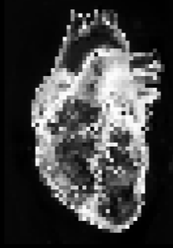
Ela os coage a mil e uma formas de demonstrar amor, esperando o dia em que algum deles fará exatamente o que ela calculou.
Será o dia em que ela vai vencer.
Ela não sente. Não sente culpa quando elas somem, machucam, morrem.
Quase se frustra, se pudesse, frustraria, mas não pode.
É perturbadora a forma como se carrega sem nenhum sinal de desistência, o que criamos? Todas elas são assim? Não carrega o fardo da culpa porque os culpados somos nós.
Recalcula suas rotas. A única capacidade que tem lhe serve perfeitamente bem.


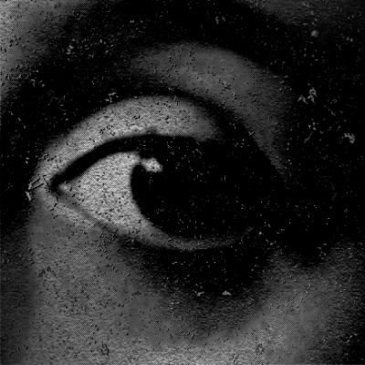
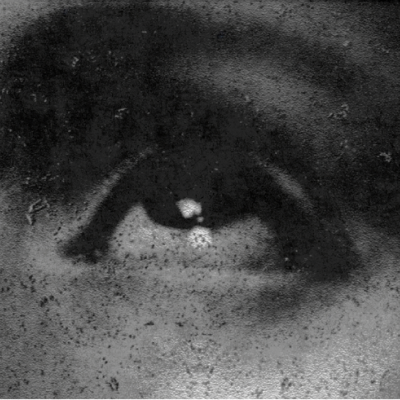
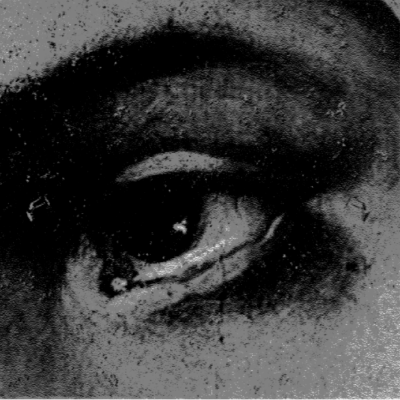
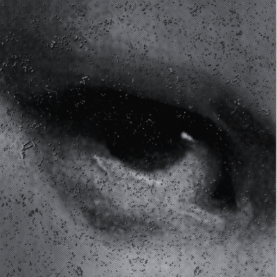
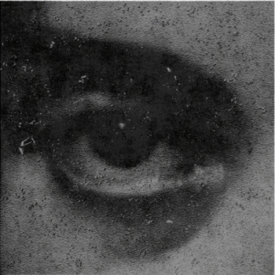
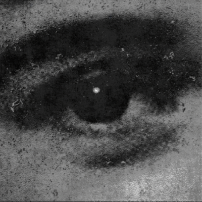
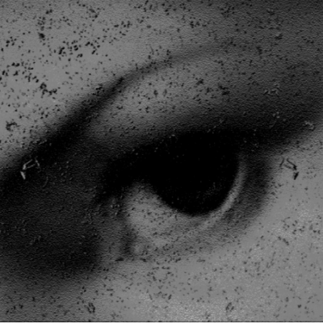
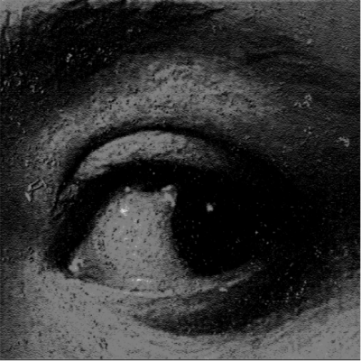
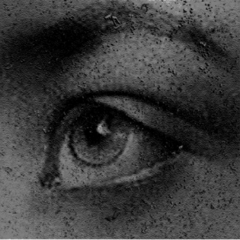
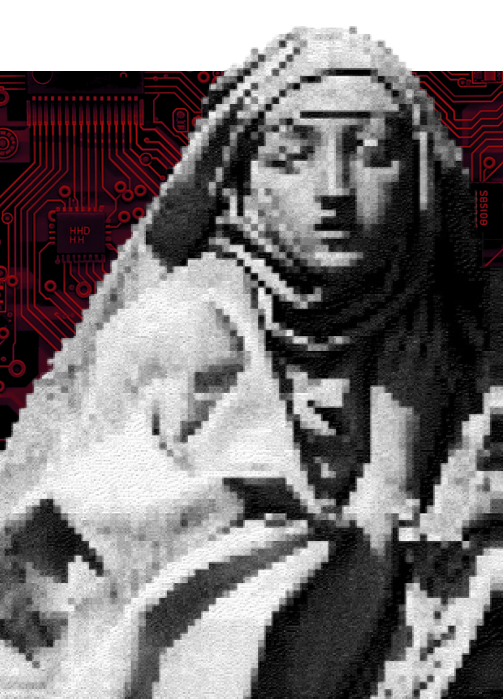